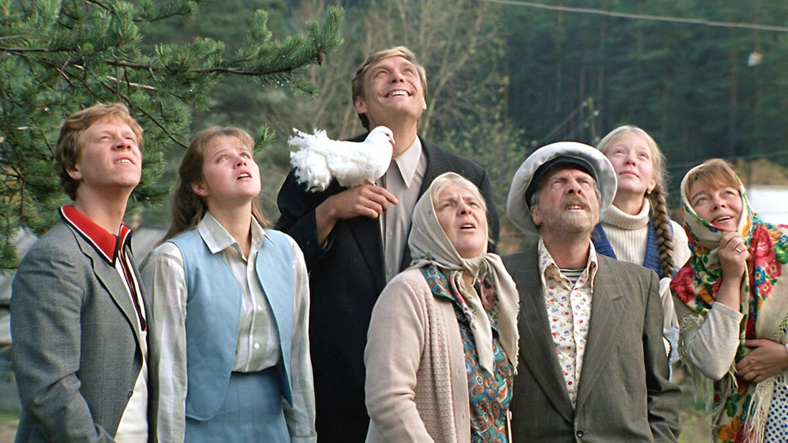
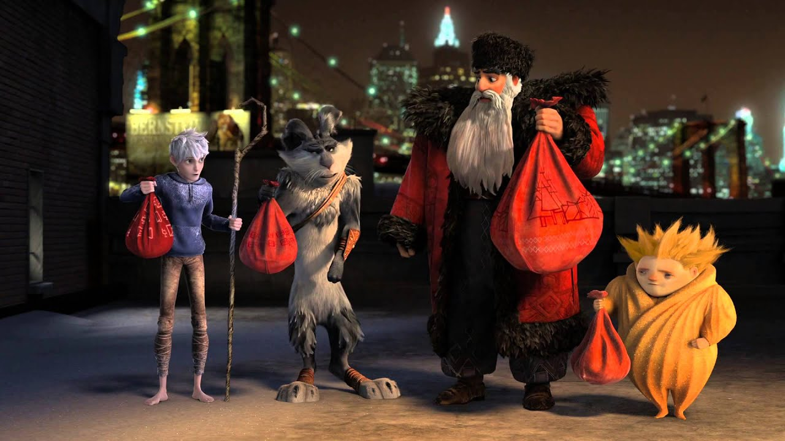

Грамм собственного опыта стоит дороже тонны чужих наставлений.
Махатма Ганди
Ирина Рогачева
Меня зовут Рогачева Ирина. Окончила Корляковскую школу Санчурского района Кировской области.
Мне очень понравилось программировать на уроках информатики.
Программируя, я сразу же загоралась желанием решить данную задачу. Поэтому я пошла на ПС.
Мое хобби
Я увлекаюсь рукоделием. Особенно люблю делать поделки в разных техниках, пробовать что-то новое.
Пострадав в результате несчастного случая, богатый аристократ Филипп нанимает в помощники человека, который менее всего
подходит для этой работы, – молодого жителя предместья Дрисса, только что освободившегося из тюрьмы. Несмотря на то, что
Филипп прикован к инвалидному креслу, Дриссу удается привнести в размеренную жизнь аристократа дух приключений.

Любовь и голуби
Ликвидируя неисправность лебедки, Василий Кузякин получил травму и путевку на юг. Встретил роковую женщину Раису Захаровну
и... вернулся Вася с курорта не к себе в деревню, а в дом Раисы Захаровны. Началась для него новая жизнь, в которой было
много непонятного и интересного, но не было дома, где остались Надя, дети и голуби...
Звездная пыль
Маленькая английская деревенька отделена древней стеной от сверхъестественной параллельной вселенной, где царят магия и
волшебство. Молодой Тристан Торн опрометчиво обещает самой красивой девушке деревни, что принесёт ей слетевшую с неба
звезду, упавшую по ту сторону стены.

Хранители снов
Когда злой дух Кромешник посягает на самое дорогое – детские мечты, Северянин, Ледяной Джек, Кролик, Зубная Фея и Песочный
Человек впервые объединяются, чтобы создать команду Хранителей снов...